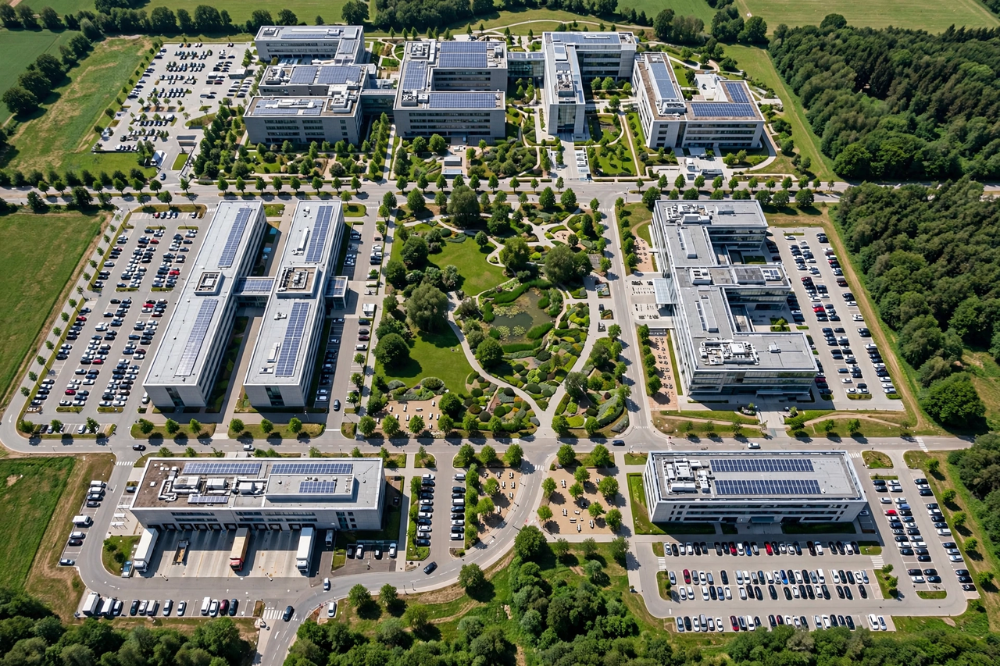

The Helmholtz Association of German Research Centres (German: Helmholtz-Gemeinschaft Deutscher Forschungszentren) is the largest scientific organisation in Germany. It is a union of 18 scientific-technical and biological-medical research centres with a total of more than 43,000 staff and an annual budget of over €5 billion. The association is named after the German physicist and physiologist Hermann von Helmholtz (1821–1894).
| Helmholtz Association | |
|---|---|
 One of the Helmholtz Association's large research campuses. | |
| Founded | 1995 (origins in the 1958 association of large research centres) |
| Type | Association of national research centres |
| Headquarters | Berlin and Bonn, Germany |
| Members | 18 research centres |
| Staff | ~43,000–45,000 |
| Named after | Hermann von Helmholtz |
The Helmholtz centres pursue long-term, large-scale research programmes intended to preserve and improve the foundations of human life: energy, earth and environment, health, information, matter, and aeronautics, space and transport. The association operates major research infrastructures — particle accelerators, research vessels such as the icebreaker Polarstern, research aircraft, and supercomputers — that are used by national and international partners. Funding comes mainly from the federal government (90 per cent) and the federal states (10 per cent), allocated through programme-oriented funding rounds in which research fields, rather than individual institutions, are evaluated competitively.
Members include the Alfred Wegener Institute for Polar and Marine Research (AWI), the German Aerospace Center (DLR), Forschungszentrum Jülich, the Karlsruhe Institute of Technology (KIT), DESY in Hamburg, the Helmholtz Centre for Infection Research, the German Cancer Research Center (DKFZ), the Max Delbrück Center for Molecular Medicine, and the Helmholtz centres for environmental and materials research. The centres trace their origins to the "large-scale research establishments" (Großforschungseinrichtungen) founded from the 1950s onward, initially concentrated on nuclear research; their umbrella organisation took the Helmholtz name in 1995.